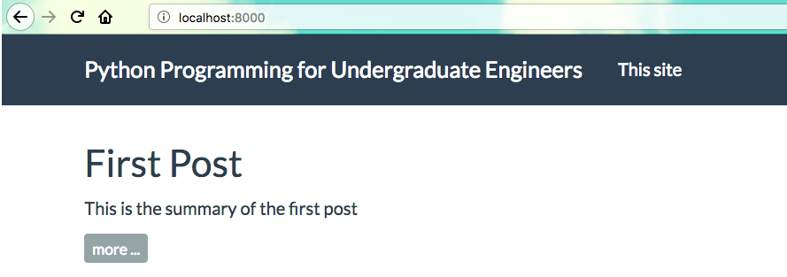

This is the sixth part in a multi-part series on how I built this site. In the last post, we put a search bar at the top right of each page and some css and javascript in order to make tables on the site look better. In this post we are going to add two new pages to our static site: an About page and a Book page. These new pages will have menu entries at the top of our site.
Steps in this post
We are going to accomplish the following in this post. By the end of the post we are going to have a site with two new pages and two new menu items.
- Activate our
staticsitevirtual environment - Pull the most recent version of our site from github
- Add two new pages (.md files) to our content folder
- Modify the pelicanconf.py file to use the new pages
- Build and preview the site with Pelican
- Add, commit and push the changes to github
Let's get started.
Activate our virtual environment and pull the most recent version of the site down from github
$ cd ~/Documents/staticsite
$ source activate staticsite
(staticsite) $ git pull origin master
The staticsite directory should look something like this:
staticsite/
├── LICENSE
├── Makefile
├── README.md
├── __pycache__
├── content
│ ├── posts
│ ├── first_post.md
│ ├── second_post.md
│ ├── third_post.md
│ ├── fourth_post.md
│ ├── code
│ ├── sample_notebook.ipynb
│ ├── extra
│ ├── custom.css
│ ├── custom.js
├── develop_server.sh
├── fabfile.py
├── output
├── pelican-plugins
│ ├── i18n_subsites
│ ├── liquid_tags
│ ├── pelican-ipynb
│ ├── tipue_search
├── pelican-themes
│ ├── pelican-bootstrap3
├── pelican.pid
├── pelicanconf.py
├── publishconf.py
└── srv.pid
Create two new pages (.md files)
Up to this point, the top of our site has a menu item for [This site], which isn't very useful.

We are going to add two new menu items that link to two new pages. These new menu items will be [About] and [Book]. First we'll create a pages folder in the staticsite/content directory
(staticsite) $ cd ~/Documents/staticsite/content
(staticsite) $ mkdir pages
(staticsite) $ cd pages
(staticsite) $ pwd
Now we create two new .md files. Note that the header in this file is different from the other posts we've written. It has a very simple header; just one line: Title. We don't need to put in a date or a slug in the header of pages, just in the header of posts. The first markdown file is the about page
about.md
Title: About
Why I started this blog
My background
My family
My hobbies
The second page is for the book I am writing, Python Programming for Undergraduate Engineers. The text for the page is going to look something like:
book.md
Title: Book
### Coming in Fall 2018
Book: **Python Programming for Undergraduate Engineers**
This books is for undergraduate engineers learning programming. It is focused on using Python and programming to solve engineering problems.
### Chapter List
* Preface
* Chapter 1: Orientation
* Chapter 2: Engineering 101
* Chapter 3: Statics
* Chapter 4: Circuits I
* Chapter 5: Strengths
* Chapter 6: Circuits II
* Chapter 7: Dynamics
* Chapter 8: Circuits III
* Chapter 9: Capstone
* Appendix
### Pre-order will be available soon
After the pages are saved, our staticsite directory should look something like this:
staticsite/
├── LICENSE
├── Makefile
├── README.md
├── __pycache__
├── content
│ ├── pages
│ ├── about.md
│ ├── book.md
│ ├── posts
│ ├── first_post.md
│ ├── second_post.md
│ ├── third_post.md
│ ├── fourth_post.md
│ ├── code
│ ├── sample_notebook.ipynb
│ ├── extra
│ ├── custom.css
│ ├── custom.js
├── develop_server.sh
├── fabfile.py
├── output
├── pelican-plugins
│ ├── i18n_subsites
│ ├── liquid_tags
│ ├── pelican-ipynb
│ ├── tipue_search
├── pelican-themes
│ ├── pelican-bootstrap3
├── pelican.pid
├── pelicanconf.py
├── publishconf.py
└── srv.pid
Modify pelicanconf.py to include the two new pages.
Pelican needs to know about the two "pages" files. Modify the pelicanconf.py file to include the lines:
#pelicanconf.py
# Paths
PATH = 'content'
PAGE_PATHS = ['pages']
ARTICLE_PATHS = ['posts']
# Top menus
DISPLAY_CATEGORIES_ON_MENU = False
DISPLAY_PAGES_ON_MENU = True
Build and preview the site with Pelican
With the two new page .md files created and the changes to pelicanconf.py in place, let's preview the site again. We build the site and serve up the contents in the output folder with:
make html
make serve
To view the site, point a browser to localhost:8000
Use ctrl-c to stop the server.
Add and commit the changes then push them to github
When we are done editing the the site, we add all of the changes to our local git repo using git add .. Commit those changes with git commit and add the -m "added about and book pages" flag to supply a commit message (make sure to use double quotes "commit message"). Push the changes up to github with git push origin master
git add .
git commit -m "added about and book pages"
git push origin master
In the next post we will publish the site to github pages. Once the site is published, it will be live and public. Available to any one with an internet connection. An actual, real, published, live static site!